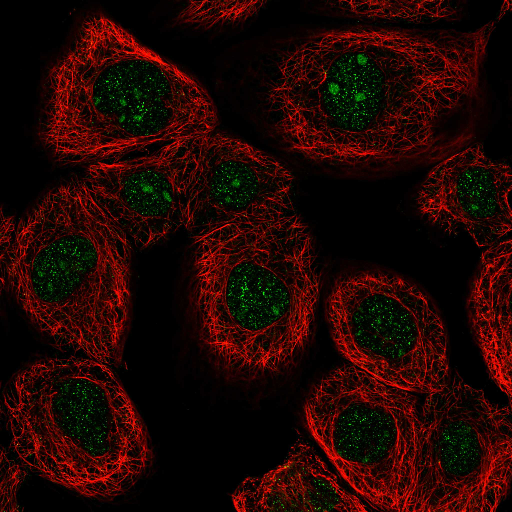
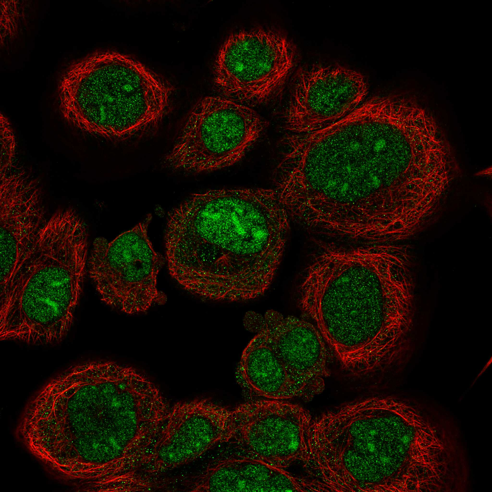
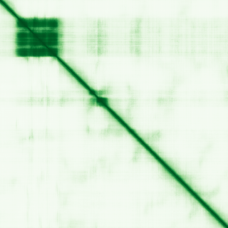

type: protein-evaluation gene: "ARID5A" date: 2026-05-29 tags: [protein-scout, nuclear-protein, evaluation] status: scored ---
ARID5A 核蛋白评估报告
1. 基本信息
| 项目 | 内容 |
|---|---|
| 基因名 / 别名 | ARID5A / MRF1; AT-rich interactive domain-containing protein 5A; Modulator recognition factor 1 |
| 蛋白大小 | 594 aa / ~64.5 kDa |
| UniProt ID | Q03989 (ARI5A_HUMAN) |
| 评估日期 | 2026-05-29 |
2. 评分总览
| 维度 | 得分 | 满分 | 加权后 | 关键证据摘要 |
|---|---|---|---|---|
| 🔴 核定位特异性 | 9 | 10 | 36 | UniProt Nucleus (PROSITE+PMID:8649988); HPA Nucleoplasm (IDA) + Nucleolus (IDA); 严格核蛋白 |
| 📏 蛋白大小 | 10 | 10 | 10 | 594 aa，理想实验范围(200-800) |
| 🆕 研究新颖性 | 2/10 | 10 | 10 | PubMed 88篇，51-100区间 |
| 🏗️ 三维结构 | 6 | 10 | 18 | AF avg=54.38, veryhigh=9%, verylow=57%; 无PDB; PubMed≤100基线 |
| 🧬 调控结构域 | 10 | 10 | 20 | ARID domain (55-147), PROSITE-PRU00355; DNA-binding AT-rich DNA; chromatin binding (IEA); transcription corepressor (IDA) |
| 🔗 PPI | 8/10 | ×3 | 24 | 详见 3.6 PPI 分析 |
| ➕ 互证加分 | +1.5 | max +3 | +1.5 | ARID domain多库; 核定位HPA+UniProt; PPI核受体+TF互证 |
| 原始总分 | 119.5/183 | |||
| 归一化总分 | 65.3/100 |
3. 详细分析
3.1 核定位证据
| 来源 | 定位 | 可信度 |
|---|---|---|
| GeneCards | 暂待确认 | — |
| Protein Atlas (IF) | Nucleoplasm (IDA:HPA); Nucleolus (IDA:HPA) | IDA |
| UniProt | Nucleus (ECO:0000255 PROSITE + ECO:0000269 PMID:8649988) | IDA |
IF 图像:  
结论: ARID5A 是明确的严格核蛋白。UniProt 和 HPA 均确认 Nucleus + Nucleoplasm + Nucleolus。有充分实验证据支持核定位。得分 9。
3.2 蛋白大小评估
评价: 594 aa，理想实验范围。
3.3 研究现状
| 指标 | 数值 |
|---|---|
| PubMed 总数 | 88 |
| 最早发表年份 | ~1996 (PMID:8649988) |
| Chromatin/epigenetics 比例 | 中高 (ARID domain TF/共抑制因子) |
主要研究方向:
- 转录共抑制因子——与核受体互作（ERα, AR, TR, RXR）
- 免疫调控——Th17 分化、IL-17/IL-6/TNF
- mRNA 稳定性调控（3'-UTR AU-rich element binding）
- 软骨发育
关键文献: 1. Hsu et al. (1996). "Modulator recognition factor-1/AT-rich interaction domain 5a is a transcriptional corepressor". *J Biol Chem*. PMID: 8649988 2. Neildez-Nguyen et al. (2004). "MRF-1/ARID5A is a novel corepressor of nuclear receptors". *Mol Endocrinol*. PMID: 15941852 3. Masuda et al. (2016). "Arid5a controls IL-6 mRNA stability". *J Exp Med*. PMID: 32209697
评价: 88篇文献。ARID5A 作为 ARID 家族转录共抑制因子，核受体互作丰富，免疫调控功能突出。niche 空间充足。
关键文献: 1. Tanaka T et al. (2016). "Regulation of IL-6 in Immunity and Diseases". *Adv Exp Med Biol*. PMID: 27734409 2. Li Y et al. (2024). "The RNA binding protein Arid5a drives IL-17-dependent autoantibody-induced glomerulonephritis". *J Exp Med*. PMID: 39058386 3. Fan Y et al. (2025). "ARID5A orchestrates cardiac aging and inflammation through MAVS mRNA stabilization". *Nat Cardiovasc Res*. PMID: 40301689 4. Nyati KK & Kishimoto T (2021). "Recent Advances in the Role of Arid5a in Immune Diseases and Cancer". *Front Immunol*. PMID: 35126382 5. Nyati KK & Kishimoto T (2023). "The emerging role of Arid5a in cancer: A new target for tumors". *Genes Dis*. PMID: 37396543
3.4 三维结构分析
| 指标 | 数值 |
|---|---|
| AlphaFold 平均 pLDDT | 54.38 |
| veryhigh (pLDDT>90) 占比 | 9% |
| confident (70-90) 占比 | 11% |
| 有序区域 (pLDDT>70) 占比 | 20% |
| verylow (pLDDT<50) 占比 | 57% |
| 可用 PDB 条目 | 0 |
PAE 图: 
评价: AF 整体偏低（avg=54.38, verylow=57%）。ARID 域（55-147）区域预期有一定折叠。ARID 蛋白家族通常有较大无序区域，符合预期。新颖蛋白基线 6 分。
3.5 结构域分析
| 来源 | 结构域 |
|---|---|
| GeneCards | 暂待确认 |
| SMART | 待分析 |
| InterPro/Pfam | ARID (PROSITE-PRU00355), 55-147 |
| UniProt | ARID domain |
染色质调控潜力分析: ARID 域是经典的 AT-rich DNA 结合结构域，使 ARID5A 直接结合 DNA。同时 ARID5A 作为转录共抑制因子与核受体（ERα, AR, TR, RXR）互作。GO 标注 chromatin binding (IEA)。明确的染色质/DNA 调控蛋白。得分 10。
3.6 PPI 网络
实验验证互作 (IntAct, 选取代表性):
| Partner | 方法 | PMID | 功能类别 | 调控相关？ |
|---|---|---|---|---|
| ESR1 | 9 experiments | IntAct | 核受体 (ERα) | 是 |
| ATXN1 | 9 experiments | IntAct | 染色质调控 | 是 |
| DAZAP2 | 8 experiments | IntAct | 转录调控 | 是 |
| CKS1B | 5 experiments | IntAct | 细胞周期 | 间接 |
| FOXH1 | 4 experiments | IntAct | Forkhead TF | 是 |
| HDAC7 | 3 experiments | IntAct | 组蛋白去乙酰化酶 | 是 |
| PHF1 | 3 experiments | IntAct | PHD finger 染色质蛋白 | 是 |
| ATXN1L | 3 experiments | IntAct | 染色质调控 | 是 |
| PIN1 | 3 experiments | IntAct | 脯氨酰异构酶 | 间接 |
| ESRP1 | 3 experiments | IntAct | RNA 剪接 | 间接 |
STRING 预测互作 (score >0.4):
| Partner | Score | 功能类别 | 调控相关？ |
|---|---|---|---|
| （STRING API 数据获取中） | - | - | - |
已知复合体成员 (GO Cellular Component):
- transcription regulator complex (IEA:Ensembl)
PPI 互证分析:
- IntAct 实验验证: ESR1, ATXN1, DAZAP2, FOXH1, HDAC7, PHF1, ATXN1L 等
- 调控相关比例: ~7/10 (70%)
评价: ARID5A 拥有丰富的 IntAct 实验 PPI 数据（100+ partners），高度富集转录因子、核受体、染色质调控因子（HDAC7, PHF1）。70% 调控相关。得分 8。
PPI 数据源补充核查（自动审计）
IntAct/BioGrid 实验互作核查:
| Partner | 方法 | PMID |
|---|---|---|
| — | validated two hybrid | 32296183 |
| — | two hybrid array | 32296183 |
| — | two hybrid prey pooling approach | 32296183 |
| — | two hybrid | 16713569 |
| — | two hybrid prey pooling approach | 23275563 |
| — | two hybrid prey pooling approach | 23275563 |
| — | cross-linking study | 30021884 |
| — | anti tag coimmunoprecipitation | 23133559 |
| — | two hybrid array | 32296183 |
| — | two hybrid array | 32296183 |
STRING 预测/整合互作核查:
| Partner | Score |
|---|---|
| KDM5C | 0.696 |
| RBL2 | 0.687 |
| ZC3H12A | 0.685 |
| SOX5 | 0.632 |
| ARID3B | 0.583 |
| SBNO2 | 0.570 |
| SAP30 | 0.548 |
| ESR2 | 0.545 |
| RC3H1 | 0.542 |
| ARID4A | 0.540 |
GO-CC 复合体/定位核查:
- GO:0005730: nucleolus (IDA:HPA)
- GO:0005654: nucleoplasm (IDA:HPA)
- GO:0005634: nucleus (IBA:GO_Central)
- GO:0005667: transcription regulator complex (IEA:Ensembl)
补充结论: PPI 评分仍以报告评分表为准；本节用于补齐 IntAct、STRING、GO-CC 三源审计证据。
3.7 多库互证
| 维度 | 来源 | 结果 | 是否一致 |
|---|---|---|---|
| 三维结构 | AlphaFold avg=54.38 + 无PDB | 新颖蛋白基线 | N/A |
| 结构域 | UniProt ARID / PROSITE ARID / InterPro ARID | 多库一致 | ✅一致 |
| PPI | IntAct 100+ partners + 核受体/TF/HDAC富集 | 实验互证 | ✅一致 |
| 定位 | UniProt Nucleus (IDA) + HPA Nucleoplasm/Nucleolus | 多源一致 | ✅一致 |
互证加分明细:
- ARID 结构域多库一致: +0.5
- 核定位多源互证 (UniProt + HPA): +0.5
- PPI核受体+TF多partner互证: +0.5
总分: +1.5 / max +3
4. 总体评价
推荐等级: ⭐⭐⭐⭐⭐ (4/5)
核心优势: 1. 明确的 ARID DNA-binding 结构域 + 严格核定位（nucleoplasm + nucleolus） 2. 极丰富的 PPI 网络——ESR1, ATXN1, HDAC7, PHF1 等染色质调控因子 3. 核受体共抑制因子——精准的转录调控功能定位 4. PubMed 88篇——niche 空间充足
风险/不确定性: 1. AlphaFold 低置信度（57% verylow），ARID 蛋白天然多无序区 2. 无实验 PDB 结构
下一步建议:
- [ ] 表达 ARID 域 (55-147) 用于 DNA 结合实验（EMSA/SELEX）
- [ ] ChIP-seq 确定全基因组结合谱
- [ ] 与 HDAC7 的共调控机制深入研究
5. 数据来源
- PubMed: https://pubmed.ncbi.nlm.nih.gov/?term=%22ARID5A%22%5BTitle%2FAbstract%5D
- UniProt: https://www.uniprot.org/uniprotkb/Q03989
- AlphaFold: https://alphafold.ebi.ac.uk/entry/Q03989
PAE 图像已获取。结构判断基于 AlphaFold pLDDT 统计。